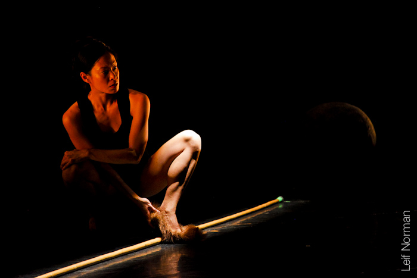
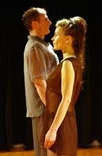
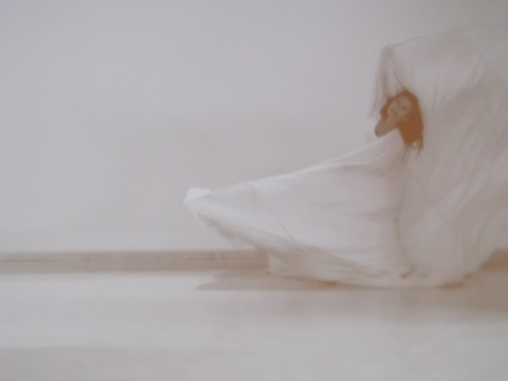

Robin Poitras
Robin is one of Saskatchewan's most prolific dance and perfomance creators. She has been immersed in contemporary dance practice since the early 80's.
For years she has meshed together formal worlds of dance with perfomance art. Her practices are rooted in a physical world comprised of choreography. She is a interdisiplinary artist often using objects.
Robin collaborates beyond dance as she forms objects and concocts costumes used in her performances. Robin's work has travelled all across Canada; internationally into France, Germany, Spain, Mongolia, and Mexico. Her close attention in researching diverse fields of artistic and somatic practices, have developed a unique style where numerous disciplines are woven into her imaginative approach.
Gallery

